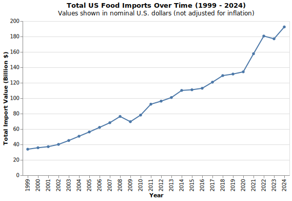

Over the past few decades, the United States has become increasingly dependent on international markets to meet its food demand. While the nation remains one of the world's largest agricultural producers, the volume and value of imported food products have expanded dramatically, reshaping the structure of the American food system. From fresh fruits and vegetables to seafood, beverages, and processed goods, imported foods now account for a substantial and growing share of what Americans consume. Several forces have driven this trend. Globalization and trade liberalization, trade agreements such as NAFTA, have lowered barriers to food imports and encouraged multinational supply chains. At the same time, shifts in consumer preferences toward year-round availability, dietary diversity, and exotic or specialty products have created sustained demand for imports beyond what domestic producers can supply.
This graph hows how total U.S. food imports have changed from 1999 to 2024 after adjusting for inflation. Even when measured in 2024 dollars, the overall trend is clearly upward: total import values increased over time. There was a small dip during the 2008-2009 financial crisis, followed by steady growth through the 2010s. After 2020, import values remained high but grew more slowly, showing that much of the recent nominal rise came from inflation rather than an increase in trade volume. Overall, the chart shows that U.S. food imports have steadily expanded over the past 25 years, even after accounting for price changes.
Behind this overall growth lies a clear pattern of regional concentration. Canada and Mexico have long been America’s most important food trade partners, together supplying a large share of total imports. Their dominance reflects both geography and the legacy of agreements such as NAFTA and its successor, the USMCA, which lowered barriers and integrated North American food systems. Yet the diversity of other contributors—from Italy and France to China—shows that the U.S. palate and supply chain extend well beyond its borders.
When we compare Canada and Mexico directly, a story of shifting balance emerges. In the early 2000s, Canada led as the top supplier of food products to the United States, thanks to its robust processing and packaging industries. But as American demand for year-round produce expanded, Mexico’s agricultural exports surged. Around 2015, the two countries crossed paths: Mexico’s food exports overtook Canada’s and have continued to grow ever since. While the Trump administration’s renegotiation of NAFTA created temporary uncertainty, the final USMCA agreement reaffirmed tariff-free trade—and Mexico’s position as the dominant source of fresh produce.
A closer look at what each country sends across the border reveals complementary strengths. Canada supplies the U.S. with cereals, bakery goods, meats, seafood, and processed foods—categories that depend on advanced manufacturing and cold-chain logistics. Mexico, by contrast, fills American grocery shelves with fresh vegetables, fruits, and beverages. Together, these two partners form a balanced trade ecosystem: Canada specializing in value-added goods, and Mexico in agricultural freshness. This division of labor explains why both countries’ export values have grown steadily despite policy turbulence.
After 2016, however, the pace and direction of trade shifted again. While Mexico expanded in nearly every major category—from fruits and vegetables to beer and liquors—Canada saw mixed trends, with modest gains in oils but declines in red meats and live animals. These differences suggest how geography, consumer demand, and policy combined to shape trade outcomes in the post-2016 era. Mexico benefited most from rising U.S. consumption of fresh produce and beverages, while Canada’s more industrial exports faced slower growth.
Taken together, these trends raise a larger question: how dependent has the United States become on a handful of countries for key foods? The final visualization explores that question directly. It shows that while America’s food import network is broad, certain commodities remain highly concentrated among a few suppliers. Fresh vegetables and fruits, for instance, depend overwhelmingly on Mexico, while Canada dominates in bakery and dairy products. This concentration underscores both the strength and the vulnerability of North American food trade—revealing how a disruption in one partner could ripple quickly through America’s food system.